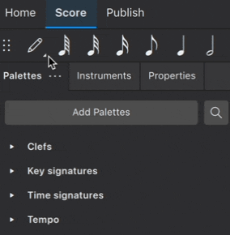

Alternative note input methods
Accessing alternative note input methods
In addition to the default step-time note entry method, there are several other methods by which notation can be entered in MuseScore.
To enter these alternative note input methods:
- Click and hold the Note input button in the Note input toolbar.
- Select from one of the available note input methods.
Keyboard users can get to the Note input button by pressing Shift+Tab or Shift+F6 a few times from the score. Screen readers will say something like "Note input toolbar: Default (step-time)". Press Space on this button to open a menu that contains all the available note input methods.

Each note input mode can also be activated directly using an assigned keyboard shortcut (See Keyboard shortcuts to learn how to assign these).
Note that the selected note input method remains in effect even when you leave note input mode and will be enabled the next time you enter note input mode. So if you change to the Re-pitch method for a single passage, be sure to change back to the Step time method when you are done.
Rhythm only
The Rhythm note input method allows you to enter durations with a single keypress. This is especially useful for unpitched percussion instruments that use a single sound. In addition, you can combine Rhythm and Re-pitch methods for an efficient workflow in certain circumstances.
- Select your starting point in the score.
- Select the Rhythm note input method as described above.
- Select a duration from the note input toolbar, or use the keyboard shortcuts
1-9, to add a note of the selected duration. - Add a dotted duration by pressing
.and selecting/typing your desired duration. In this mode, the duration dot is toggled on/off for all subsequently entered durations. It's worth noting that the duration dot needs to be activated prior to entering the note value, rather than afterwards. - Enter rests by clicking the rest icon in the note input toolbar and select/type your desired duration. When the desired duration already has been selected (from the previous entered note), pressing
0will enter the rest. Click the rest button to return to entering notes. - Continue pressing duration keys to enter notes with the chosen durations.
By default, notes are entered onto the middle stave line. You can use the cursor keys to change the pitch of the note just entered, and subsequent notes will also be entered using that pitch. You can also use Re-pitch mode to quickly enter pitches for a passage after entering the rhythm.
Re-pitch
The Re-pitch note input method allows you to change the pitches of a sequence of notes while leaving their durations unaltered.
- Select your starting point in the score.
- Select the Re-pitch note input method as described above, or use the keyboard shortcut
Ctrl+Shift+I(Mac:Cmd+Shift+I). - Enter pitches using the computer keyboard, MIDI keyboard or virtual piano keyboard. Note: you cannot use the mouse to input notes in the Re-pitch method.
The Re-pitch method can be an extremely efficient way of entering notes in music with repeated rhythmic patterns. Simply copy and paste an existing passage that uses the same rhythm as your new passage, then use re-pitch mode to alter the pitches. The same technique can be used to enter multiple instrumental or vocal parts that share the same rhythm but different pitches.
Real-time
The real-time note input methods basically allow you to perform the piece on a MIDI keyboard (or MuseScore's virtual piano keyboard) and have the notation added for you. However, you should be aware of the following limitations which currently apply:
- You must pre-select the shortest duration you wish to use.
- You cannot enter tuplets in Real-time note input.
- You must enter notes onto a single stave and in a single voice, just as with other note input modes.
- It is not possible to use a computer keyboard for Real-time note input.
These restrictions mean that MuseScore has very little guessing to do when working out how your input should be notated, which helps to keep these methods accurate.
Real-time (metronome)
With the Real-time (metronome) note input method, you play at a fixed tempo indicated by a metronome click. You can adjust the tempo by changing the delay between clicks from the menu: Edit→Preferences...→Note Input (Mac: MuseScore→Preferences...→Note Input).
- Select your starting position in the score.
- Select the Real-time (metronome) note input method as described above.
- Select a duration from the note input toolbar to represent the metronome click.
- Press and hold a MIDI key or virtual piano key to enter a note of the selected duration.
- Listen for the metronome clicks—with each click the note grows by the selected duration.
- Release the key when the note has reached the desired length.
The score stops advancing as soon as you release the key. If you want the score to continue advancing, which is necessary to enter rests, then you can use the Real-time Advance shortcut to start the metronome. The same action will stop the metronome again.
Real-time (foot pedal)
With the Real-time (foot pedal) note input method, you indicate your input tempo by tapping on a key or pedal. You can play at any speed you like, and it doesn't have to be constant. The default key for setting the tempo (called "Real-time Advance") is Enter on the numeric keypad (Mac: Fn+Return), but it is highly recommended that you change this to a MIDI key or MIDI pedal (see below).
- Select your starting position in the score.
- Select the Real-time (foot pedal) note input method as described above.
- Select a duration from the note input toolbar to represent the metronome click.
- Press and hold a MIDI key or virtual piano key.
- Press the "Real-time Advance" shortcut with each press, the note grows by the selected duration.
- Release the note when it has reached the desired length.
Real-time Advance shortcut
The "Real-time Advance" shortcut is used to start the metronome with the Real-time (metronome) method or to tap beats with the Real-time (foot pedal) method. It is called "Real-time Advance" because it causes the input position to move forward, or "advance", through the score.
The default key for Real-time Advance is Enter on the numeric keypad (Mac: Fn+Return), but it is highly recommended that you assign this to a MIDI key or MIDI pedal via MuseScore's MIDI remote control. The MIDI remote control is available from the menu: Edit→Preferences...→MIDI mappings (Mac: MuseScore→Preferences...→MIDI mappings).
Alternatively, if you have a USB footswitch or computer pedal which can simulate keyboard keys, you could set it to simulate Enter on the numeric keypad.
Insert
Insert note input method allows you to insert and delete notes and rests within measures, automatically shifting subsequent music forward and backward within the measure. The measure duration is automatically updated as you go.
To insert a note:
- Select your starting position in the score.
- Select the Insert note input method as described above.
- Enter a note or rest as you would in Step time mode. Each note is inserted before the current cursor position, and the bar duration is increased to compensate.
When the notes are entered they will be placed just before the selected starting element, which will be highlighted with a square blue marker. The start element and any subsequent notes or rests within the same bar will be shifted forward. You can move the insertion point forward and backward using the Right or Left arrow keys, and the new insertion point will then be highlighted.
Alternatively, if you have only one or two notes to insert, you can do this directly with the default Step time note input method. Press Ctrl+Shift (Mac: Cmd+Shift) while adding the note by mouse or keyboard shortcut (A-G).
To insert a rest, first insert a note of the desired duration, then press Backspace or Del.
To delete a note or rest, use the shortcut Ctrl+Del (Mac: Cmd+Backspace). The bar duration is decreased to compensate. The shortcut works with both the Step time and Insert note input methods.
Because inserting and notes may cause the bar duration to increase or decrease beyond what is specified by the time signature, a small "+" or "-" sign will be shown above the bar when this happens.